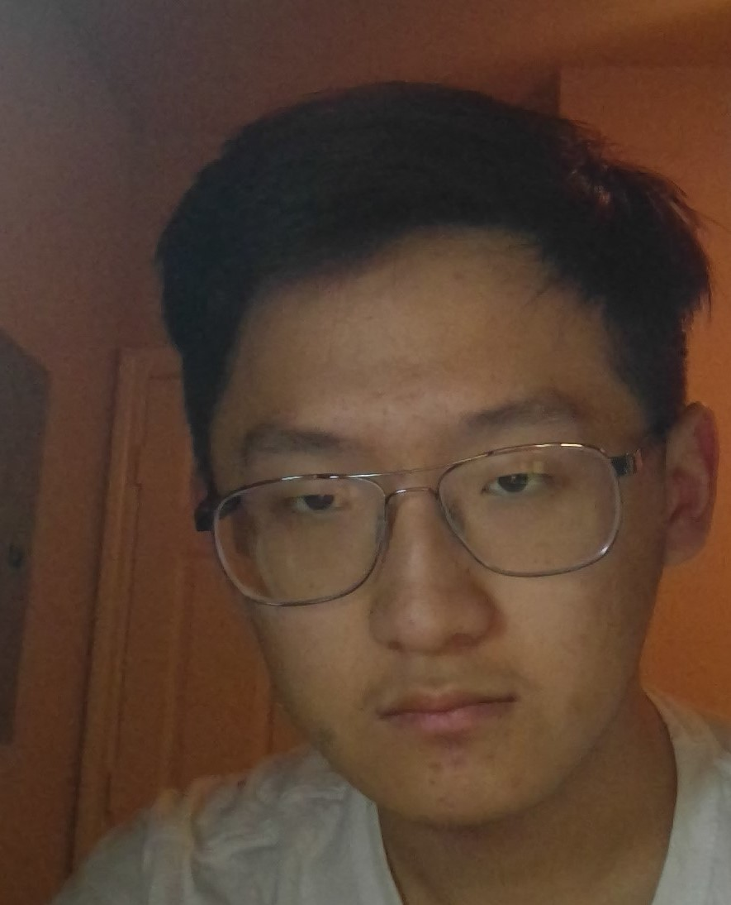

Dear my friends,
Greeting from Aggieland!
My name is Yingtao Jiang, a computer engineering senior with emphasis in computer science and
minor in engineering project management. I always have a broad dream that is to use computer
science to make the life of people more convenient. Because of the feeling that I have the s
ocial responsibility to make a better world with others, I participate in a lot of social
works. Model United Nations is one of it. In the summer of 2019, I volunteered in a primary
school located only about 3 miles away from Thai-Cambodia border to enrich English education.
Without expectation in living quality, my mind was fulfilled by accomplishment. I then dance
and acting in front of hundreds of people. Those dances includes k-pop, Chinese tradition and
breaking. Things above are my social life, but talking about why continue pursuing more knowledge,
it is another story. I came to United States two years ago. In the choice between mathematics and
computer engineering, I chose the computer engineering. Then I self-recommended to be the treasurer of
a new erected robotics club “Robomaster Robotics”. I have less idea about managing club money as a
freshman, but I am confident because of success in the marketing of MUN in high school. After this,
I have close contact with those passionate engineers with multiple strengths to build totally 6
combating robots. It was a great success that one year after we built them and get into the
Robomaster competition held my DJI with a funding about 3900 dollars plus club fees tens of
dollars per person. After came back from China, we enlarged our team and became more professional
and specialized. I became an embedded system engineer. I learnt a lot of things outside of the
classroom. It is a memorable experience when we try to make the 4 wheels of the robot spin
accordingly and using the simulation program to have a team fight together. Then, after that
you know that COVID-19 came and laboratories are closed.